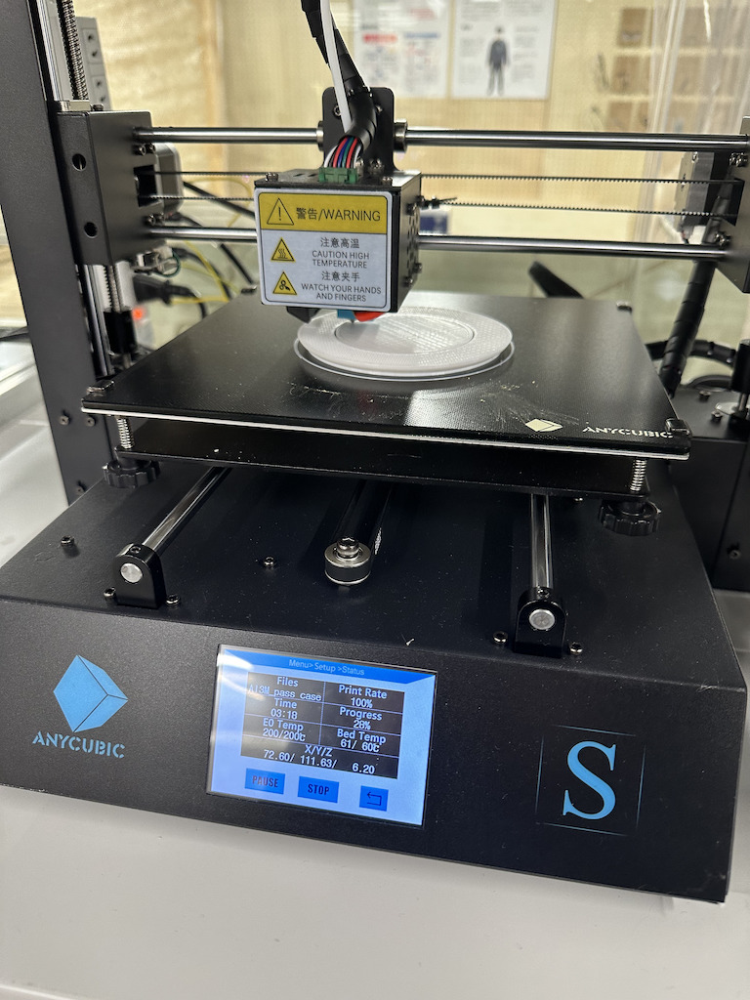
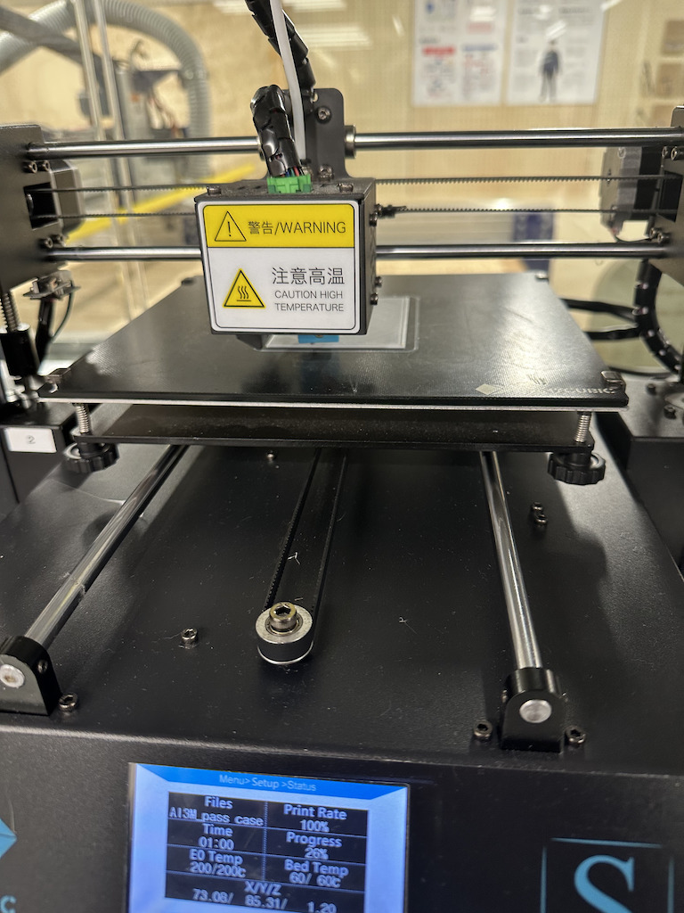
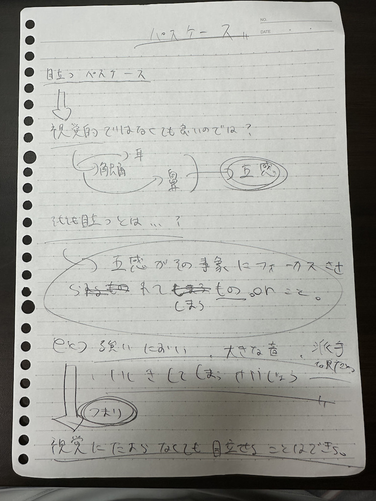
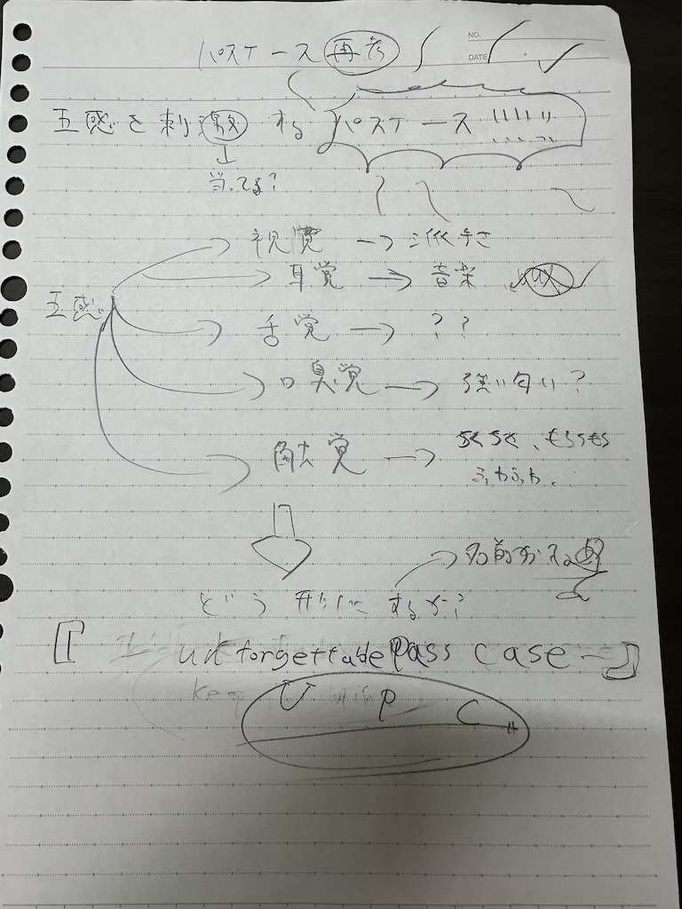

第四回課題 目立つパスケース
画像
 
 
stlファイル
pass1
pass2
問題の提起
毎回小銭を決まった額、一円単位でPASMOの入金している人がいた。
その人はとてもめんどくさそうでどうにかしてあげられないかと思った。
お金という概念自体を無くすことも、新しい交通機関を作ったりすることもできないし、かといってPASMO
のような物も作れないし、、、私はこの人に何をして上げらるだろうと考えた。
結果、せめてPASMOを無くさないように目立つパスケースを作ってあげようということになった。
説明
目立つとは何かというのを再考し、目立つとはその名の通り視覚的なものかもしれないと思った。
だが、別に視覚だけ刺激する事象が目立つわけではないわけで、五感がその事象の方向に行くことを目立つということではないかと思った。
なので視覚だけに訴えるのではなく触覚、聴覚、視覚、嗅覚、味覚など
色々な感覚に訴えられるものを作ろうと思い作った。
使用機材
3Dプリンター
反省
今回完成までに持っていくことができず、満足にいく結果を得られることが出来なかった。
もう少し早くから行動すれば良かったと思う。一日遅れるが完成品を提出したいと思う。